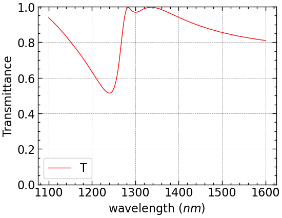

import matplotlib.pyplot as plt
import numpy as np
import tidy3d as td
import tidy3d.web as webTransmission of Huygens’ Surface
Yankun (Alex) Meng
Important Questions to answer:
- Why do we need a normalizing run? (FDTD 101)
- Why is there a mismatch between
td.FreqRange.wvl0andtd.C_0 / td.FreqRange.freq0
Huygens’ Metasurface Paper Link
Preconditions
# 0 Define a FreqRange object with desired wavelengths
fr = td.FreqRange.from_wvl_interval(wvl_min=1.1, wvl_max=1.6)
N = 301 # num_points# 1 Computational domain size
h = 0.220 # Height of cylinder
spc = 2
Lz = spc + h + h + spc
Px = Py = P = 0.666 # periodicity
sim_size = [Px, Py, Lz]# 2 Grid Specifications
dl = P / 32
horizontal_grid = td.UniformGrid(dl=dl)
vertical_grid = td.AutoGrid(min_steps_per_wvl=32)
grid_spec=td.GridSpec(
grid_x=horizontal_grid,
grid_y=horizontal_grid,
grid_z=vertical_grid,
)# 3 Structures
r = 0.242 # radius of the cylinder
n_Si = 3.5
Si = td.Medium(permittivity=n_Si**2, name='Si')
cylinder = td.Structure(
geometry=td.Cylinder(center=[0, 0, h / 2], radius=r, length=h, axis=2), medium=Si
)
# Spin_on glass + substrate
n_glass = 1.4
n_SiO2 = 1.45
glass = td.Medium(permittivity=n_glass**2, name='glass')
SiO2 = td.Medium(permittivity=n_SiO2**2, name='oxide')
substrate = td.Structure(
geometry=td.Box(
center=(0,0,-Lz/2),
size=(td.inf,td.inf,2 * (spc+h))
),
medium=SiO2,
name='substrate'
)
glass = td.Structure(
geometry=td.Box(
center=(0,0,Lz/2),
size=(td.inf,td.inf,2 * (spc+h))
),
medium=glass,
name='superstrate'
)
# Polymer
n_polymer = 1.66
polymer = td.Structure(
geometry=td.Box(
center=(0,0,0),
size=(td.inf,td.inf,td.inf)
),
medium=td.Medium(permittivity=n_polymer**2, name='polymer'),
name='polymer'
)# 4 Sources
source = td.PlaneWave(
source_time=fr.to_gaussian_pulse(),
size=(td.inf, td.inf, 0),
center=(0, 0, Lz/2 - spc + 2 * dl),
direction="-",
pol_angle=0
)# 5 Monitor
monitor = td.FluxMonitor(
center=(0, 0, -Lz/2 + spc - 2*dl),
size=(td.inf, td.inf, 0),
freqs=fr.freqs(N),
name="flux"
)# 6 Run Time
bandwidth = fr.fmax - fr.fmin
run_time= 50 / bandwidth# 7 Boundary Condition
bc = td.BoundarySpec(
x=td.Boundary.periodic(),
y=td.Boundary.periodic(),
z=td.Boundary.pml()
)Simulation
sim_empty=td.Simulation(
size=sim_size,
grid_spec=grid_spec,
structures=[substrate, glass],
sources=[source],
monitors=[monitor],
run_time=run_time,
boundary_spec=bc
)sim_actual = td.Simulation(
size=sim_size,
grid_spec=grid_spec,
structures=[substrate, glass, cylinder],
sources=[source],
monitors=[monitor],
run_time=run_time,
boundary_spec=bc
)fig, (ax1,ax2,ax3) = plt.subplots(1, 3, figsize=(10, 6))
sim_actual.plot_eps(x=0, ax=ax1)
sim_actual.plot_eps(y=0, ax=ax2)
sim_actual.plot_eps(z=0, ax=ax3)
sims = {
"norm": sim_empty,
"actual": sim_actual,
}
batch = web.Batch(simulations=sims, verbose=True)batch_data = batch.run(path_dir="data")00:11:07 UTC Started working on Batch containing 2 tasks.
Maximum FlexCredit cost: 0.050 for the whole batch.
Use 'Batch.real_cost()' to get the billed FlexCredit cost after the Batch has completed.
00:11:08 UTC Batch complete.
Postprocess
- 35 seconds to run both simulations
- results are stored inside
batch_data
T = batch_data["actual"]["flux"].flux / batch_data["norm"]["flux"].flux# plot transmission, compare to paper results, look similar
fig, ax = plt.subplots(1, 1, figsize=(6, 4.5))
plt.plot(fr.freqs(N), T, "r", label="T")
plt.xlabel(r"Frequency ($Hz$)")
plt.ylabel("Magnitude")
plt.ylim(0, 1)
plt.legend()
plt.show()
# plot transmission, compare to paper results, look similar
fig, ax = plt.subplots(1, 1, figsize=(6, 4.5))
plt.plot(td.C_0 / fr.freqs(N) * 1000, T, "r", label="T")
plt.xlabel(r"wavelength ($nm$)")
plt.ylabel("Magnitude")
plt.ylim(0, 1)
plt.legend()
plt.show()